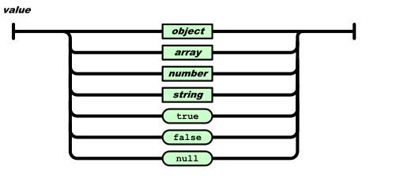
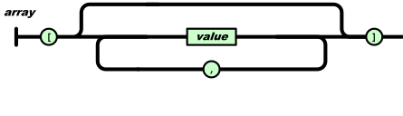
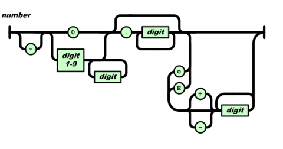

title: The JSON Data Interchange Syntax
shortname: ECMA-404
version: 3rd edition
committee: 39
status: draft
location: https://tc39.es/ecma404/
date: 2026-12-08
boilerplate:
copyright: alternative

JSON is a text syntax that facilitates structured data interchange between all programming languages. JSON is a syntax of braces, brackets, colons, and commas that is useful in many contexts, profiles, and applications. JSON stands for JavaScript Object Notation and was inspired by the object literals of JavaScript aka ECMAScript as defined in the ECMAScript Language Specification, Third Edition. However, it does not attempt to impose ECMAScript's internal data representations on other programming languages. Instead, it shares a small subset of ECMAScript's syntax with all other programming languages. The JSON syntax is not a specification of a complete data interchange. Meaningful data interchange requires agreement between a producer and consumer on the semantics attached to a particular use of the JSON syntax. What JSON does provide is the syntactic framework to which such semantics can be attached.
JSON syntax describes a sequence of Unicode code points. JSON also depends on Unicode in the hex numbers used in the `\u` escapement notation.
JSON is agnostic about the semantics of numbers. In any programming language, there can be a variety of number types of various capacities and complements, fixed or floating, binary or decimal. That can make interchange between different programming languages difficult. JSON instead offers only the representation of numbers that humans use: a sequence of digits. All programming languages know how to make sense of digit sequences even if they disagree on internal representations. That is enough to allow interchange.
Programming languages vary widely on whether they support objects, and if so, what characteristics and constraints the objects offer. The models of object systems can be wildly divergent and are continuing to evolve. JSON instead provides a simple notation for expressing collections of name/value pairs. Most programming languages will have some feature for representing such collections, which can go by names like record, struct, dict, map, hash, or object.
JSON also provides support for ordered lists of values. All programming languages will have some feature for representing such lists, which can go by names like array, vector, or list. Because objects and arrays can nest, trees and other complex data structures can be represented. By accepting JSON's simple convention, complex data structures can be easily interchanged between incompatible programming languages.
JSON does not support cyclic graphs, at least not directly. JSON is not indicated for applications requiring binary data.
It is expected that other standards will refer to this one, strictly adhering to the JSON syntax, while imposing semantics interpretation and restrictions on various encoding details. Such standards may require specific behaviours. JSON itself specifies no behaviour.
Because it is so simple, it is not expected that the JSON grammar will ever change. This gives JSON, as a foundational notation, tremendous stability.
JSON was first presented to the world at the JSON.org website in 2001. A definition of the JSON syntax was subsequently published as IETF RFC 4627 in July 2006. ECMA-262, Fifth Edition (2009) included a normative specification of the JSON grammar. This specification, ECMA-404, replaces those earlier definitions of the JSON syntax. Concurrently, the IETF published RFC 7158/7159 and in 2017 RFC 8259 as updates to RFC 4627. The JSON syntax specified by this specification and by RFC 8259 are intended to be identical.
JSON is pronounced /ˈdʒeɪ.sən/, as in "Jason and The Argonauts".
JSON is a lightweight, text-based, language-independent syntax for defining data interchange formats. It was derived from the ECMAScript programming language, but is programming language independent. JSON defines a small set of structuring rules for the portable representation of structured data.
The goal of this specification is only to define the syntax of valid JSON texts. Its intent is not to provide any semantics or interpretation of text conforming to that syntax. It also intentionally does not define how a valid JSON text might be internalized into the data structures of a programming language. There are many possible semantics that could be applied to the JSON syntax and many ways that a JSON text can be processed or mapped by a programming language. Meaningful interchange of information using JSON requires agreement among the involved parties on the specific semantics to be applied. Defining specific semantic interpretations of JSON is potentially a topic for other specifications. Similarly, language mappings of JSON can also be independently specified. For example, ECMA-262 defines mappings between valid JSON texts and ECMAScript's runtime data structures.
A conforming JSON text is a sequence of Unicode code points that strictly conforms to the JSON grammar defined by this specification.
A conforming processor of JSON texts should not accept any inputs that are not conforming JSON texts. A conforming processor may impose semantic restrictions that limit the set of conforming JSON texts that it will process.
The following referenced documents are indispensable for the application of this document. For dated references, only the edition cited applies. For undated references, the latest edition of the referenced document (including any amendments) applies.
ISO/IEC 10646, Information Technology - Universal Coded Character Set (UCS)
https://www.iso.org/standard/76835.html
The
https://www.unicode.org/versions/latest
IETF. RFC 8259: "The JavaScript Object Notation (JSON) Data Interchange Format"
Edited by Bray, T. December 2017. https://www.rfc-editor.org/info/rfc8259/
This specification and RFC 8259 both provide specifications of the JSON grammar but do so using different formalisms. The intent is that both specifications define the same syntactic language. If a difference is found between them, Ecma International and the IETF will work together to update both documents. If an error is found with either document, the other should be examined to see if it has a similar error, and fixed if possible. If either document is changed in the future, Ecma International and the IETF will work together to ensure that the two documents stay aligned through the change. RFC 8259 also defines various semantic restrictions on the use of the JSON syntax. Those restrictions are not normative for this specification.
A JSON text is a sequence of tokens formed from Unicode code points that can be matched by the |JSONText| production. The set of tokens includes six structural tokens,
The six structural tokens:
| Token | Code Point | Name |
|---|---|---|
| `[` | U+005B | left square bracket |
| `{` | U+007B | left curly bracket |
| `]` | U+005D | right square bracket |
| `}` | U+007D | right curly bracket |
| `:` | U+003A | colon |
| `,` | U+002C | comma |
These are the three literal name tokens:
| Token | Code Points |
|---|---|
| `true` | U+0074 U+0072 U+0075 U+0065 |
| `false` | U+0066 U+0061 U+006C U+0073 U+0065 |
| `null` | U+006E U+0075 U+006C U+006C |
Any token may be preceded and/or followed by insignificant whitespace consisting of an arbitrary combination of the following code points: character tabulation (U+0009), line feed (U+000A), carriage return (U+000D), and space (U+0020). Concretely, |JSONText| may begin and/or end with |JSONWhiteSpace|, and there is implicitly an optional |JSONWhiteSpace| in the right-hand side of each JSON grammar production after each non-final structural token terminal symbol and before each non-initial structural token terminal symbol (e.g.,
A JSON value can be an object, array, number, string, `true`, `false`, or `null`.

An object structure is represented as a pair of curly bracket tokens surrounding zero or more name/value pairs. A name is a string. A single colon token follows each name, separating the name from the value. A single comma token separates a value from a following name. The JSON syntax does not impose any restrictions on the strings used as names, does not require that name strings be unique, and does not assign any significance to the ordering of name/value pairs. These are all semantic considerations that may be defined by JSON processors or in specifications defining specific uses of JSON for data interchange.

An array structure is a pair of square bracket tokens surrounding zero or more values. The values are separated by commas. The JSON syntax does not define any specific meaning to the ordering of the values. However, the JSON array structure is often used in situations where there is some semantics to the ordering.

A number is a sequence of decimal digits with no superfluous leading zero. It may have a preceding minus sign (U+002D). It may have a fractional part prefixed by a decimal point (U+002E). It may have an exponent, prefixed by `e` (U+0065) or `E` (U+0045) and optionally `+` (U+002B) or `-` (U+002D). The digits are the code points U+0030 through U+0039.

Numeric values that cannot be represented as sequences of digits (such as Infinity and NaN) are not permitted.
A string is a sequence of Unicode code points wrapped with quotation marks (U+0022). All code points may be placed within the quotation marks except for the code points that must be escaped: quotation mark (U+0022), reverse solidus (U+005C), and the control characters U+0000 to U+001F. There are two-character escape sequence representations of some characters.
| Escape Sequence | Represents | Code Point |
|---|---|---|
| `\"` | quotation mark | U+0022 |
\\ |
reverse solidus | U+005C |
| `\/` | solidus | U+002F |
| `\b` | backspace | U+0008 |
| `\f` | form feed | U+000C |
| `\n` | line feed | U+000A |
| `\r` | carriage return | U+000D |
| `\t` | character tabulation | U+0009 |
So, for example, a string containing only a single reverse solidus character may be represented as "\\".
Any code point may be represented as a hexadecimal escape sequence. The meaning of such a hexadecimal number is determined by ISO/IEC 10646. If the code point is in the Basic Multilingual Plane (U+0000 through U+FFFF), then it may be represented as a six-character sequence: a reverse solidus, followed by the lowercase letter `u`, followed by four hexadecimal digits that encode the code point. Hexadecimal digits can be digits (U+0030 through U+0039) or the hexadecimal letters `A` through `F` in uppercase (U+0041 through U+0046) or lowercase (U+0061 through U+0066). So, for example, a string containing only a single reverse solidus character may be represented as `"\u005C"` .
The following four cases all produce the same result:
To escape a code point that is not in the Basic Multilingual Plane, the character may be represented as a twelve-character sequence, encoding the UTF-16 surrogate pair corresponding to the code point. So for example, a string containing only the G clef character (U+1D11E) may be represented as `"\uD834\uDD1E"`. However, whether a processor of JSON texts interprets such a surrogate pair as a single code point or as an explicit surrogate pair is a semantic decision that is determined by the specific processor.
The JSON grammar permits code points for which Unicode does not currently provide character assignments.

ECMA-262, ECMAScript Language Specification
https://www.ecma-international.org/publications-and-standards/standards/ecma-262/